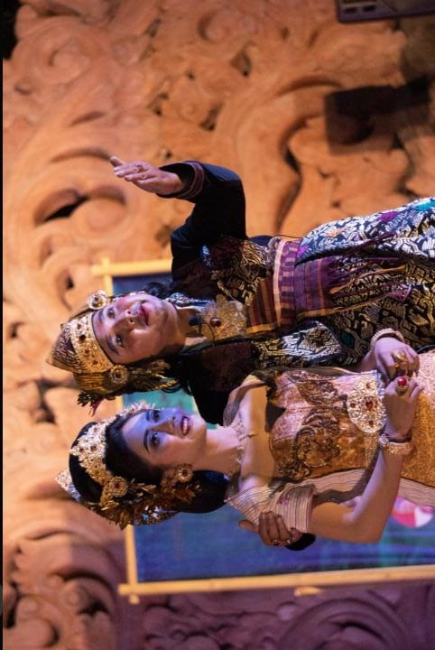
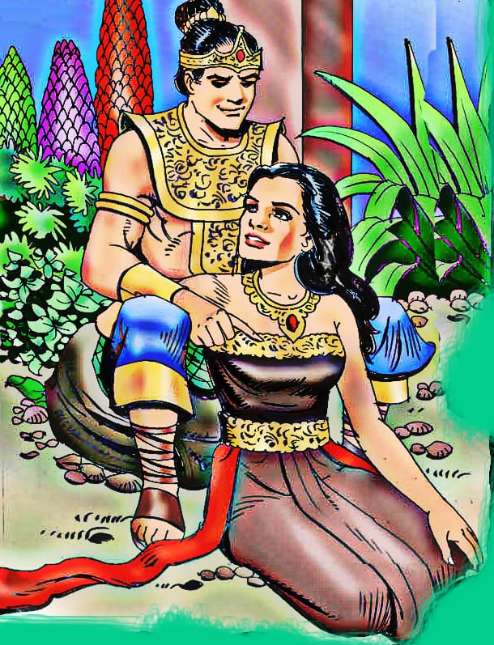
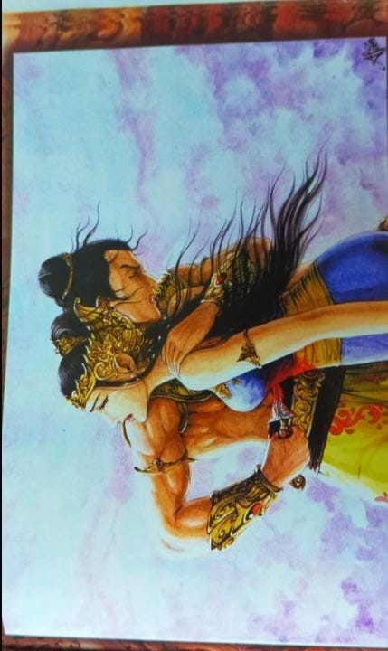

📜 Sejarah & Asal Usul
Kisah ini menceritakan tentang Sri Tanjung, seorang istri yang dituduh tidak setia oleh suaminya, Sidapaksa, karena termakan fitnah. Sebelum dibunuh oleh suaminya di tepi sungai, Sri Tanjung berpesan jika darahnya berbau harum, itu bukti kesuciannya.
Setelah Sidapaksa membunuhnya dan membuang tubuhnya ke sungai, air sungai tersebut tiba-tiba mengeluarkan aroma sangat wangi. Sidapaksa pun menyadari kesalahannya dan sangat menyesal. Peristiwa inilah yang menjadi asal-usul nama Banyuwangi (dari kata banyu = air, dan wangi = harum).
💭 Makna Filosofis
Legenda Sri Tanjung bukan sekadar cerita rakyat biasa, melainkan fondasi identitas budaya yang membawa pesan moral mendalam:
❤️ Kesetiaan & Kejujuran
Pentingnya menjaga kesetiaan dan kejujuran karena kebenaran pasti akan terungkap pada akhirnya, seburuk apapun fitnah yang diterima.
⚠️ Bahaya Fitnah
Larangan untuk mudah percaya pada fitnah dan hasutan yang dapat membawa penyesalan mendalam dan kerugian yang tidak dapat diperbaiki.
⚖️ Kesabaran & Keadilan
Menghargai nilai kesabaran, keadilan, serta ketulusan hati dalam menjalani kehidupan. Kebaikan akan selalu meninggalkan "aroma" yang baik.
️ Pelestarian Budaya
Meskipun tidak memiliki prosesi adat khusus seperti ritual lainnya, kisah Sri Tanjung terus dilestarikan melalui berbagai medium budaya di Banyuwangi:
1. Pementasan Wayang & Drama
Kisah ini sering diangkat dalam pementasan wayang kulit, drama tradisional (ketoprak), dan pertunjukan tari daerah yang menceritakan pengorbanan Sri Tanjung.
2. Materi Pembelajaran
Legenda ini diintegrasikan ke dalam materi pembelajaran muatan lokal di sekolah-sekolah Banyuwangi agar generasi muda mengenal sejarah nama daerah mereka.
3. Festival Budaya
Sering menjadi tema utama dalam festival budaya tahunan di Banyuwangi, seperti Banyuwangi Ethno Carnival atau pertunjukan seni di panggung terbuka.
✨ Fakta Menarik
Legenda Paling Ikonik
Menjadi salah satu legenda paling ikonik di Jawa Timur yang secara langsung memberikan nama pada Kabupaten Banyuwangi.
Simbol Ketangguhan Perempuan
Tokoh Sri Tanjung diapresiasi secara luas sebagai simbol universal dari ketangguhan perempuan yang setia, sabar, dan berani mempertahankan kebenaran hingga akhir hayat.
Sungai Beraroma Wangi
Keajaiban alam dalam legenda ini (sungai yang tiba-tiba wangi) menjadi metafora kuat tentang bagaimana kebenaran dan kesucian hati tidak bisa disembunyikan.
📸 Galeri



